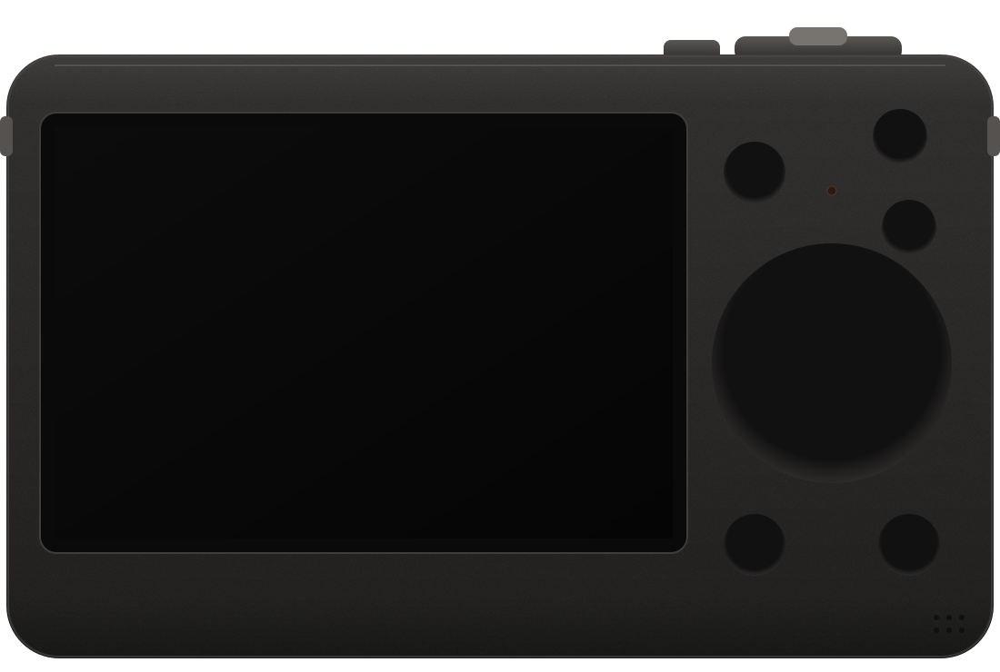
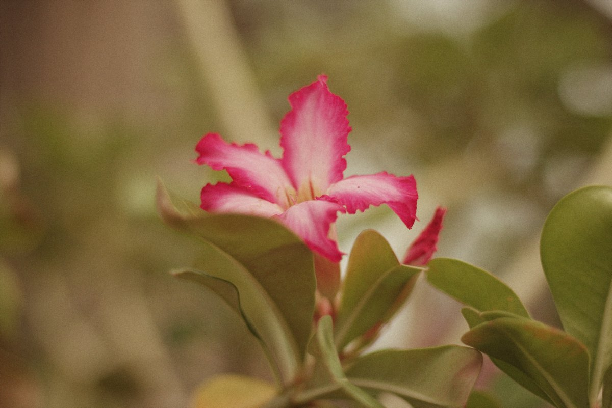
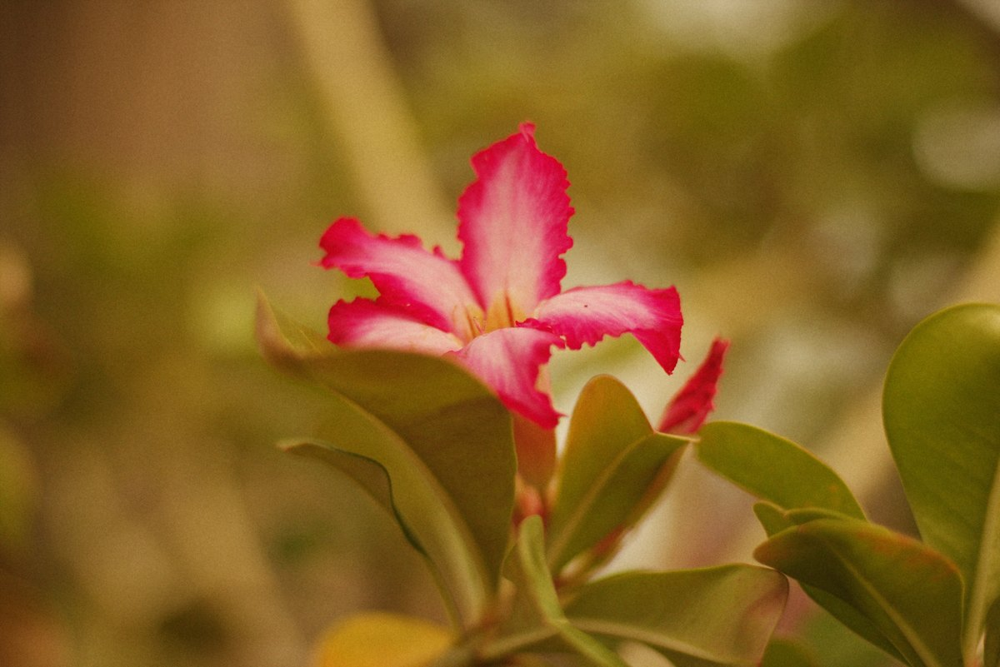
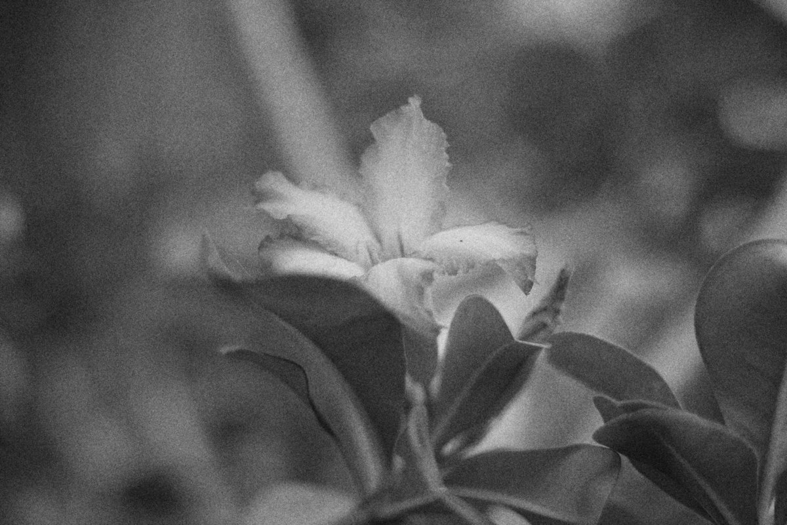
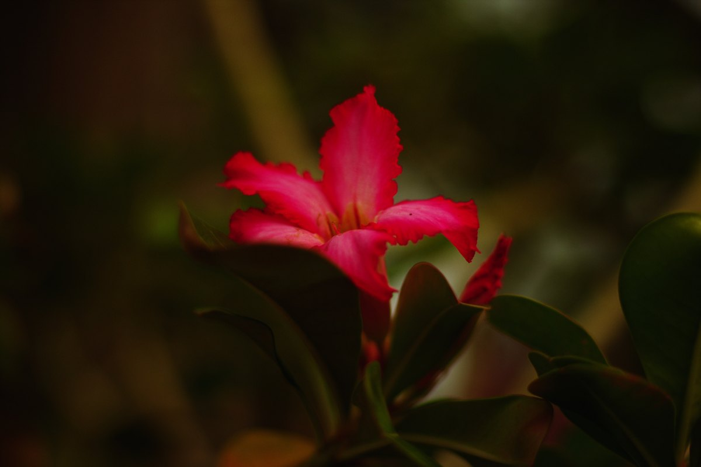
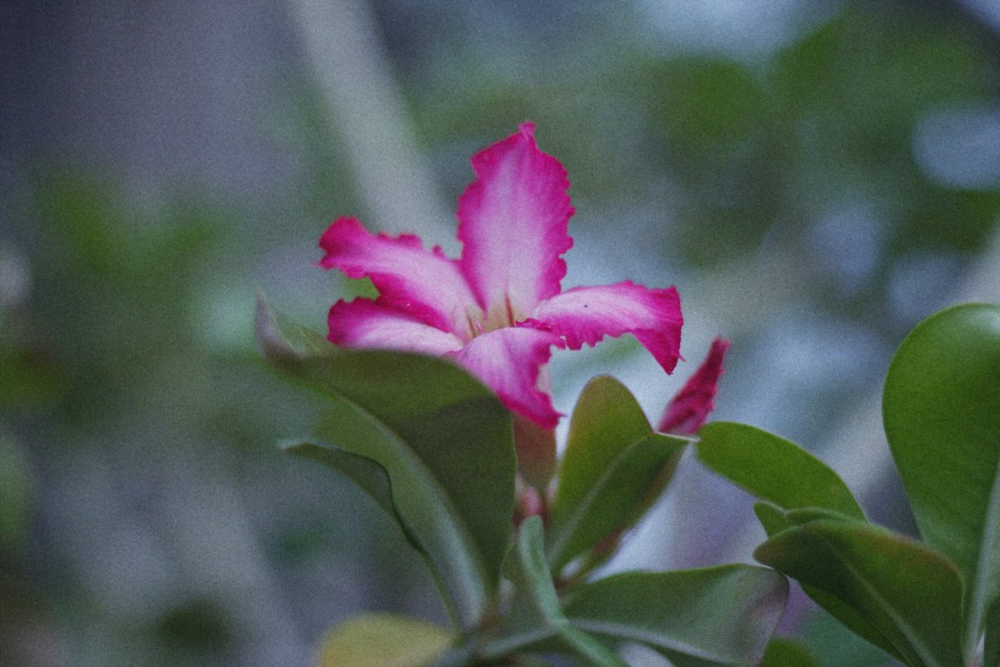
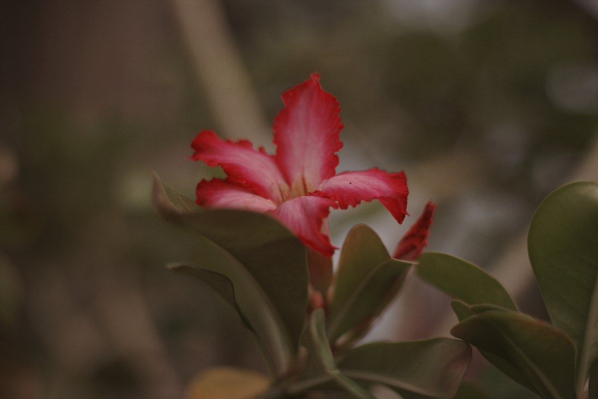

Your Canon,
shot like film.
This is M-Film running on an EOS M, in your browser: the same menus, drawn by the same code as on the camera. Load a roll, shoot it, then develop it.
more soon

Loading the film OS…
Starting…
dial
72 films, on four shelves
Colour negative, slide, black and white, and cinema film. Each has its own colour, grain, halation and softness.






For Canon cameras that run Magic Lantern
Works on the EOS M, 6D, 60D, 50D, 500D, 550D, 100D and 650D; the 700D, 70D, 5D Mark III, 5D Mark II and 1100D are being tested. The camera side is free and open source (GPL-2.0).
Every camera and how far it got →Develop on your computer: Darkrooms
The camera develops its rolls by itself, slowly. Darkrooms does it on your computer, fast: plug the camera in, and every roll is there.
Freeone roll a day, up to 36 frames
US$2.99a month
US$14.99once, for good